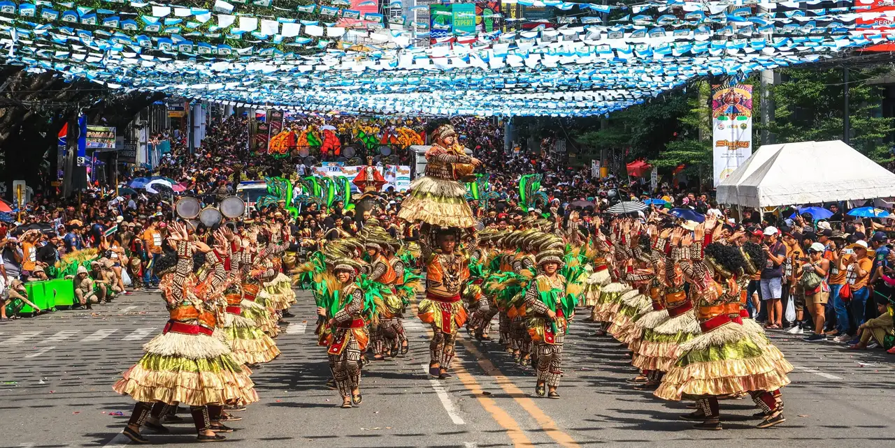

Welcome to Tripura!

Tripura, located in northeastern India, is renowned for its rich cultural heritage, diverse tribal traditions, and
scenic landscapes. The culture of Tripura is a harmonious blend of indigenous tribal customs, Bengali influences,
and royal legacy, contributing to the state's unique identity.
Festivals play a significant role in Tripura's cultural life, reflecting its religious diversity and communal
harmony. Garia Puja is a major tribal festival celebrated with dances, songs, and rituals to honor the deity
Garia, seeking blessings for a good harvest. Durga Puja, a prominent Bengali festival, is celebrated with
grandeur, featuring elaborate pandals and cultural performances. The Kharchi Puja, held at the Chaturdasha Temple,
is another significant festival that involves rituals to cleanse the earth and worship the fourteen deities.
Tripuri cuisine is characterized by its simplicity and use of fresh, local ingredients. Dishes like Mui Borok
(fermented fish), Berma (dried and fermented fish), and Gudok (a traditional stew) are staples in the tribal diet.
Bengali influences bring dishes like Macher Jhol (fish curry) and various sweets to the culinary landscape. The
cuisine reflects the state's agrarian lifestyle and the abundance of natural resources.
Music and dance are integral to Tripura's cultural expression, with traditional forms such as Hojagiri, Garia, and
Lebang Bumani dances being performed during festivals and social events. These dances, characterized by rhythmic
movements and vibrant costumes, depict stories of daily life, nature, and spirituality. The state's musical
heritage includes the use of instruments like the sumui (a type of flute), pung (drum), and sarinda (a stringed
instrument).
Tripura's architectural heritage is a testament to its royal past, with landmarks such as Ujjayanta Palace,
Neermahal (a water palace), and the ancient rock carvings at Unakoti. These sites attract history enthusiasts and
tourists, showcasing the state's rich history and cultural evolution. The state's natural beauty, including lush
hills, dense forests, and serene lakes like Rudrasagar, offers a picturesque backdrop for cultural exploration and
eco-tourism.
The state's handicrafts are renowned for their intricate designs and craftsmanship, with products like bamboo and
cane furniture, hand-woven textiles, and pottery reflecting the artistic skills of Tripura's artisans. Traditional
attire, such as the Rignai (women's wrap) and Rikutu Gamcha (men's shawl), is often adorned with vibrant patterns
and motifs, highlighting the cultural identity of the tribal communities.